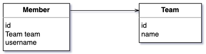
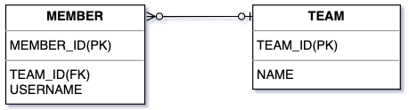
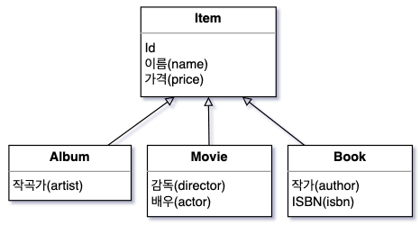

참고 외부 자료가 실제로 그리는 방식
김영한 JPA 책 계열 도식입니다. 색도 그림자도 없고, 제목 칸 하나에 필드 목록만 있는 박스입니다. 값(1, title1)은 넣지 않고 구조만 보여 줍니다. 객체와 테이블이 같은 이름·같은 모양이고, 차이는 한 줄에서만 드러납니다.

객체 — Member 박스가 Team team 필드를 가지고 Team을 화살표로 참조

테이블 — MEMBER 박스가 TEAM_ID(FK) 컬럼으로 TEAM과 연결

상속 — Item 아래 Album·Movie·Book. 같은 박스 형식 재사용
D안 외부 형식을 그대로 따른 두 장
값을 빼고 구조만. board_tb와 Board가 같은 이름·같은 모양이고, 차이는 마지막 칸 update() 하나입니다. CH02의 Board 엔티티(id·title·content·createdAt)와 정확히 일치합니다.
데이터베이스는 데이터를 정확히 보관하고 빠르게 검색하도록 설계되었습니다. 데이터를 행(Row)과 열(Column)로 구성된 표 형태로 저장하며, 각 칸에는 단일 값만 들어갑니다.
그림 2-16. 데이터베이스의 board_tb 테이블
반면 자바는 데이터(필드)와 행위(메서드)를 하나의 객체로 묶어 관리합니다.
그림 2-17. 자바의 Board 객체
E안 외부 형식을 좌우 한 장으로
D안과 같은 박스를 한 그림에 나란히. 가운데 점선이 같은 게시글임을 잇습니다.
그림 2-16. 같은 게시글을 담는 두 방식